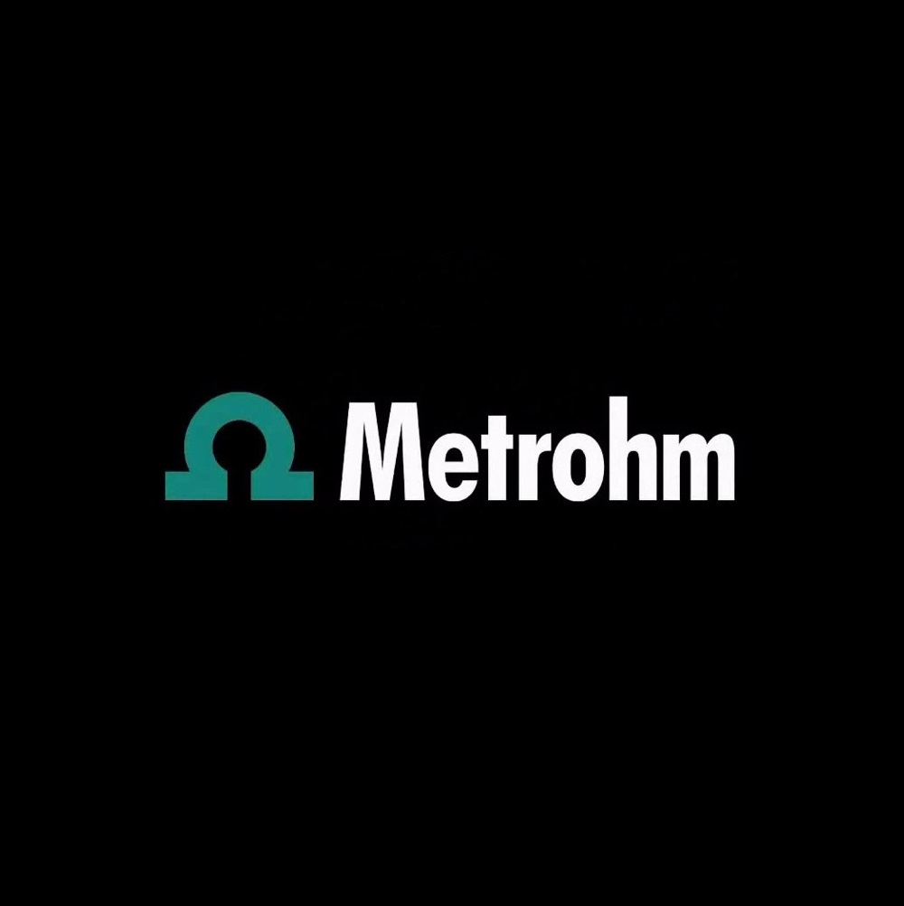
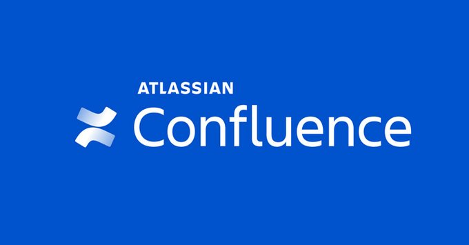
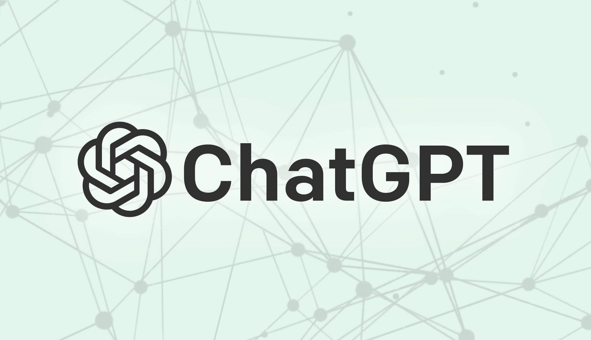
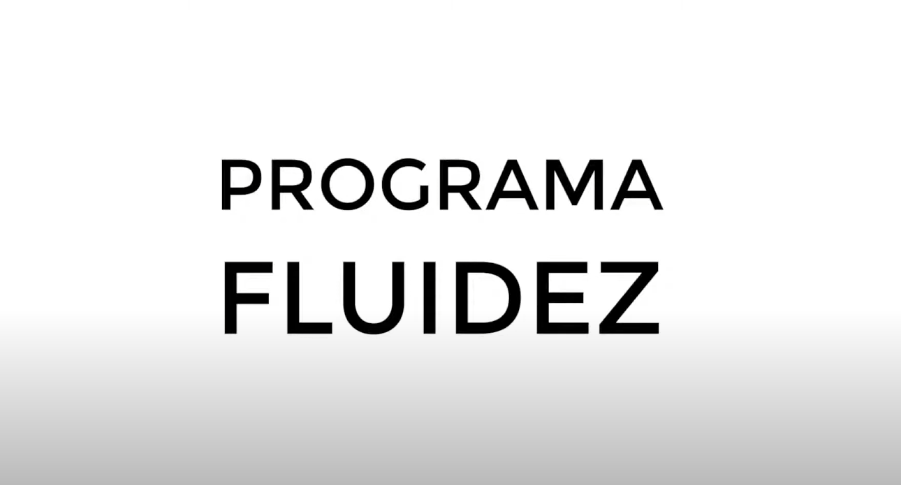
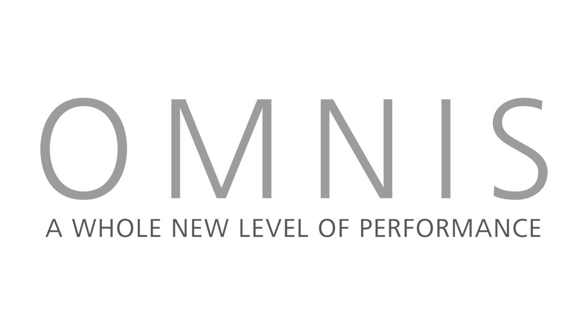
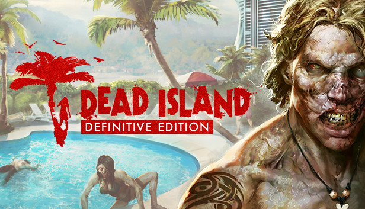

Product builder. AI trainer to 2,000+ employees. Technical writer. 12+ years turning complex tech into products people love and teams that actually get AI.
Trusted by teams at

I went from studying 15 languages to working at Nintendo at 23. Since then I've documented APIs at Amazon, wrote UX copy for scientific instruments at Metrohm, and spent three years at Frontiers — where the role evolved far beyond documentation.
At Frontiers, I trained over 2,000 employees on AI, built automated workflows, launched a company-wide prompting community with weekly AI news and discussions, and drove initiatives that reshaped how the organization adopted generative AI. The last two of my three years there were dedicated to AI education and change management at scale.
I was using GPT-3 before ChatGPT existed. Today I hold Google Cloud Gen AI certifications, build AI-integrated products, and ship language-learning apps powered by spaced repetition and the Claude API. I don't just write about technology — I build with it.
Where linguistics, data modeling, and software meet. I don't just document tech — I ship it.
A full-stack Chinese learning game covering HSK 1–3 with 2,449 vocabulary entries. Four game modes (Journey, Visions, Forge, Library) with SM-2 spaced repetition tracking recall, recognition, and listening independently. 10+ drill types, native audio, grammar in context, and a samurai combat mechanic that makes studying addictive.
Play on web → | Soon on AndroidAn experimental platform for learning German through natural, intuitive methods. Early-stage prototype exploring how spaced repetition and contextual drilling can be applied to German grammar — one of the hardest parts for any learner. Same philosophy: every word from every angle.
Explore prototype →From documentation to AI workshops — I help teams communicate clearly and ship faster.
Trained 2,000+ people on prompt engineering, LLM workflows, and AI agents. I make your entire org AI-literate.
From concept to shipped product. React, Firebase, APIs, PWAs on Google Play. I design, build, and deploy end to end — fast.
Storytelling frameworks, slide design, and delivery techniques. Make your next talk unforgettable.
Courses, onboarding flows, and training programs that stick. Built around how adults actually learn.
API docs, user guides, release notes, information architecture. Clear writing for complex systems.
Automated workflows, Confluence structures, communication systems, tool adoption. Cut the noise, boost the signal.
Microcopy, interface text, email campaigns, and landing pages. Words that convert and delight.
Cultural adaptation across ES/EN/DE. Nintendo-trained linguist. Games, software, and marketing.
Linguistic QA, functional testing, accuracy review. Nothing ships with errors on my watch.
A cross-section of 12 years in tech, gaming, publishing, and education.

Scalable information architecture for Frontiers' go-to documentation tool.
Communication culture revamp at Frontiers through structured Teams adoption.

AI training program for 2,000+ employees. Prompting community, weekly AI news, automated workflows, and change management.
Localized four titles: A Link Between Worlds, Majora's Mask 3D, Wind Waker HD, and Hyrule Warriors.
User guides, help docs, and UX element translation for Amazon's seller platform.

English learning system for Spanish speakers — grammar, vocabulary, and pronunciation.
Copy for own language-learning products resulting in thousands of sales.

UX texts and release notes in German with focus on terminology accuracy.

Linguistic and functional testing for the award-winning action RPG (PC & consoles).
"What sets Álvaro apart is his constant pursuit of excellence. He always pushes for the best possible solution, often going above and beyond what is expected."
"He's a great professional, detail-oriented who always provides the best results. Worked with two development teams at a time without showing any stress."
"Not only an excellent linguist but a tech-savvy, multi-talented individual with a great eye for detail, bias for action and excellent attitude towards team work."
"Álvaro was extremely open to new ideas and adapting the hard work already put in to iterate on the final content."
"Profound knowledge of tools and capability to maintain structure during intense meetings are critical aspects that he should absolutely maintain."
"His ability and motivation to adapt quickly to any new situation ensured he immediately excelled in the team."
"Demonstrated a proactive and solution-oriented mindset, contributing greatly to our organization and efficiency."
"He was fast, creative and asked relevant questions all the time. We were a great team and I am sure you will like having Álvaro in yours."
"Always willing to help, with a very positive attitude, he always showed commitment and got things done with special attention to detail."
Breaks down complex problems into clear parts.
Constantly seeking creative, modern solutions.
Decisions based on long-term thinking.
Precision in every detail, every time.
First to adopt new tech and concepts.
Thrives independently as a proactive agent.
Stands firm for deep-seated beliefs.
Calm under pressure, always in control.
Whether you need documentation, an AI workshop, or a product prototype — I deliver fast, remotely, and to the point.